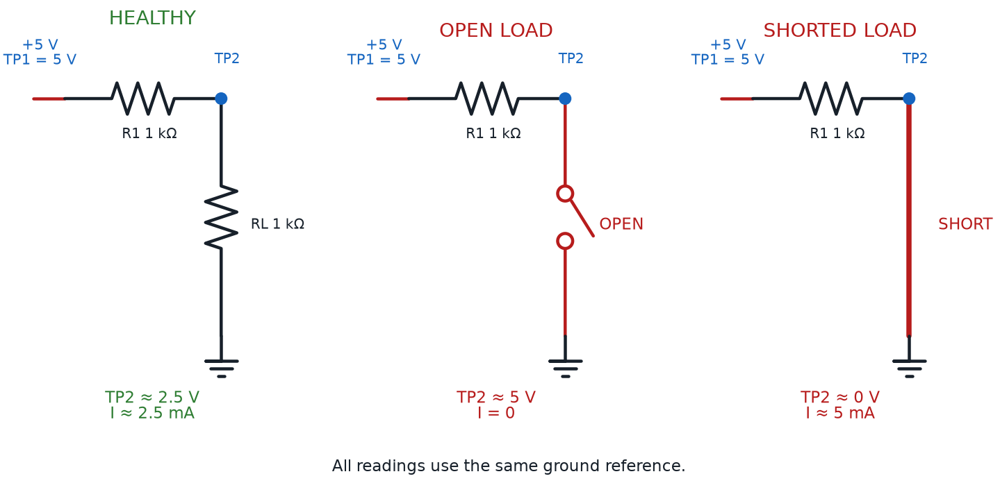

Systematic Troubleshooting
Summary
Students learn a structured troubleshooting process — checking power first, half-split testing, comparing to a known-good circuit, and isolating one variable at a time — for diagnosing any circuit that isn't behaving as expected.
Concepts Covered
This chapter covers the following 19 concepts from the learning graph:
- Current Range Selection
- Diode Testing Mode
- Measuring LED Forward Voltage
- Overload Indicator
- Open Circuit Reading
- Short Circuit Reading
- Component Testing
- Out-Of-Circuit Testing
- Power Supply Testing
- Circuit Debugging
- Troubleshooting Strategy
- Half-Split Troubleshooting
- Comparing To Known-Good Circuit
- Checking Power First
- Isolating One Variable
- Signal Tracing
- Documenting Test Results
- Component Datasheet
- Reading A Component Label
Prerequisites
This chapter builds on concepts from:
- 1. Electricity Basics: Voltage, Current, and Resistance
- 9. Resistors and Capacitors
- 10. Capacitor Timing and Resistor Values
- 20. Using a Multimeter
Chapter 8 taught you to spot the obvious physical mistakes — a loose wire, a bent leg, a component dropped one row too low. A careful, patient look almost always catches them.
Some circuit problems refuse to be that polite. A resistor can measure the wrong value while looking perfectly normal. A "good" battery can collapse the instant a real circuit asks it for current. None of these problems show up to the naked eye — only to a meter.
Chapter 8 taught you to spot the obvious physical mistakes. Now that you have a multimeter, you can diagnose problems you can't see. This chapter teaches the meter techniques built for hunting down hidden faults, then the systematic method real engineers use to find them fast — instead of poking at wires and hoping.
Let's Solve a Real Mystery
Welcome back, builder! You've already learned to spot the obvious physical mistakes, and you've already learned to measure anything with a meter. Today those two skills combine into one real skill: a systematic way to hunt down any fault, seen or unseen, using evidence instead of guesses. Let's light it up!
Multimeter Modes Built for Diagnosis
Chapter 20 taught you a multimeter's four basic jobs: voltage, current, resistance, and continuity. Diagnosing a broken circuit leans on a few extra habits and one extra mode that Chapter 20 didn't need — all four aimed squarely at finding faults instead of just confirming numbers.
Current range selection is the choice of which current range, or which physical jack, a meter uses before you measure current. Most auto-ranging meters handle voltage and resistance without any thought from you, but current is different: many meters route small currents through one fused jack, and large currents — like a stalled motor's surge — through a separate, unfused jack built to survive it. Guessing too low a range when you suspect a short can blow the meter's internal fuse instantly.
When Unsure, Start High
Not sure how much current a suspect circuit is really drawing? Start on the highest current range your meter offers, then step down once you've confirmed the value is small. It costs one extra glance at the display. A blown fuse costs you the rest of your afternoon.
This course's circuits stay safely in the milliamp range, so you'll rarely need the high-current jack. But the habit — checking your range before your probes touch anything — is worth building now, since it's the same habit that keeps a meter alive around bigger projects later.
A Special Mode for Diodes and LEDs
Resistance mode works fine for resistors, but it gives misleading results on diodes and LEDs, because those parts don't behave like a simple resistor at all — they conduct current in one direction only, and only once the voltage across them climbs high enough. That's exactly why most multimeters include a dedicated setting for them.
Diode testing mode is a dial position, usually marked with a diode's triangle-and-bar symbol, that pushes a small fixed current through the component and displays the actual voltage dropped across it — instead of calculating a resistance the way ohms mode does. Touch the red probe to the anode and the black probe to the cathode, and a healthy diode or LED shows its real forward voltage directly on the screen.
That reversal behavior is the whole test. Swap the probes around a healthy diode, and the display should read "OL," because current refuses to flow backward through a good diode. A diode that reads a real number in both directions is shorted internally. A diode that reads "OL" in both directions is open internally.
Measuring LED forward voltage puts diode-test mode directly to work on the component Chapter 12 first introduced. Probe a red LED in the forward direction, and you should see something close to the 1.9 V this book has promised since Chapter 12 — often glowing faintly, since the meter's own small test current is enough to light a sensitive LED. A blue or white LED reads noticeably higher, closer to 3 V, because of the different semiconductor materials behind its color. A suspect LED that reads far from either number, or reads "OL" forward, is telling you exactly why it isn't lighting up in your circuit.
One Test, Two Directions, Three Answers
A diode is basically a one-way door for current. Forward gives you a real voltage if the door swings the right way; reverse should give "OL" if it stays shut. A real number both ways means the door's been welded open — a short. "OL" both ways means it's rusted shut — an open.
Reading the Overload Indicator on Purpose
Chapter 20 mentioned that a display reading "OL" usually just means a value is too big for the current range. During diagnosis, that same signal becomes one of your most useful clues, once you know how to read it in context.
The overload indicator is the "OL" (or sometimes a lone "1") a multimeter shows when whatever it's measuring exceeds what the current mode and range can display. In resistance or diode-test mode, an "OL" almost always means there's no complete path for the meter's own test current — in plain language, an open circuit. In current mode, it means the actual current is larger than the selected range allows, the same current-range-selection problem you just met above.
OL Isn't a Broken Meter — It's a Clue
New builders sometimes see "OL," assume the meter itself is broken, and give up on the reading entirely. Don't ignore it! An unexpected "OL" where you expected a normal number is often the single biggest clue in the whole investigation — it's the meter telling you, in its own language, exactly where a connection has broken.
Reading the Meter: Open, Short, or Normal
Every measurement you take while troubleshooting falls into one of three buckets: normal, open, or shorted. Learning to recognize all three on sight, across every mode, turns a page of numbers into an instant diagnosis.
An open circuit reading is what a meter shows when there's no complete path between your probes — a break in the wire, a disconnected lead, or a component that's failed internally. In resistance or diode mode, an open circuit shows the overload indicator you just met. In continuity mode, it stays silent. In voltage mode on a circuit that should carry current, an open circuit downstream often shows the full supply voltage, since no current flows to create a drop past the break.
A short circuit reading is nearly the opposite: a connection exists where one shouldn't, letting current flow through a path that should have resistance in the way. In resistance mode, a short reads suspiciously close to zero ohms on a part that should measure much higher. In continuity mode, it beeps between points you expected to be separate. In voltage mode, a shorted component reads close to 0 V across its own leads.
Diagram: Healthy, Open, and Shorted Circuit Measurements

The table below gathers every mode's normal, open, and shorted signature into one place you can check against any confusing reading.
| Mode | Normal Reading | Open Circuit Reading | Short Circuit Reading |
|---|---|---|---|
| Resistance (Ω) | A number close to the component's expected value | "OL" — no complete path for the test current | Near 0 Ω on a part that should read much higher |
| Diode Test | A real forward voltage one way, "OL" the other way | "OL" in both directions | A real, low voltage in both directions |
| Voltage (V) | A stable value near the expected drop or supply | Full supply voltage past the break, or an unstable/floating reading | Close to 0 V across the shorted part |
| Current (mA) | A steady value matching your Ohm's-law estimate | 0 mA — nothing is flowing anywhere in that loop | Much higher than expected, or the overload indicator |
| Continuity | A beep only where two points should truly connect | Silence where a connection was expected | A beep where none was expected |
No matter which mode you're in, every reading sorts into the same three buckets: normal, open, or shorted. Learn that table once, and you can read almost any confusing number a meter throws at you.
Testing a Component on Its Own Terms
Knowing what a reading means only helps if you're measuring the right thing.
Component testing is the practice of checking a single part's health directly, using the meter, instead of guessing its condition from how the whole circuit behaves. A dark LED could mean a bad LED, a bad resistor, a bad connection, or a dead battery — component testing lets you check each suspect individually until you find the culprit.
Most component tests only give a trustworthy answer under one condition. Out-of-circuit testing means removing, or fully disconnecting, a component before measuring it — rather than probing it while it's still wired in. A resistor still wired into a live circuit gives a reading that includes every other part sharing its path, not just that one resistor, which is exactly the kind of misleading number that sends a troubleshooter chasing the wrong fault.
Pull It Out Before You Trust the Number
Testing a resistor or diode's own resistance while it's still wired into a powered circuit is one of the sneakiest troubleshooting mistakes. The meter isn't lying — it's measuring exactly what's in front of it, which now includes every other part sharing that same path. Lift at least one leg out of the board, or pull the part entirely, before you trust an ohms or diode-test reading.
Try both diode-test techniques from this chapter's earlier section — reading a forward voltage and checking for reversal — on a set of good and faulty diodes and LEDs pulled out of their circuits below.
Diagram: Diode Test Mode Explorer
Diode Test Mode Explorer
Type: infographic
sim-id: diode-test-mode-explorer
Library: p5.js
Status: Specified
Purpose: Let students select one of four out-of-circuit diode/LED samples (good diode, good red LED, shorted diode, open diode), touch a virtual meter set to diode-test mode to it in both directions, and read the resulting voltage or overload indicator so they can classify the part as normal, shorted, or open.
Bloom Taxonomy: Understand (L2) / Apply (L3). Bloom Verb: interpret, demonstrate, classify.
Learning objective: Given a multimeter set to diode-test mode and four out-of-circuit diode/LED samples, probe each sample in both directions and interpret the resulting reading (a forward voltage, an overload indicator, or a low voltage in both directions) to classify the part as good, shorted, or open.
Reuse check: An embeddings search (find-similar-templates, mode=reuse) for "Title: Diode Testing Mode and LED Forward Voltage Explorer | Topic: multimeter diode test mode, LED forward voltage, open circuit reading, short circuit reading, overload indicator | Subjects: Electronics, Electric Circuits | Grade Level: Junior High | Learning Objectives: Identify what a multimeter's diode-test mode reading means for a good diode, a reversed diode, an open diode, and a shorted diode" returned a top match of "Transistor Driver and Dimmer Circuit" (dmccreary/moving-rainbow, WHAT score 0.4722, recommendation "generate") — well below the 0.60 template threshold and topically about PWM dimming, not diode-test diagnosis. A keyword grep of the catalog for "multimeter," "voltmeter," "diode test," and "forward voltage" found nothing relevant. New specification.
Canvas layout: A row of four labeled sample cards along the top (Good Diode, Good Red LED, Shorted Diode, Open Diode); a drawn multimeter fixed on the diode-test symbol with two probes and a "Reverse Probes" toggle below; a reading display with an infobox beneath.
Components/elements involved: Four out-of-circuit sample cards; a multimeter body with red/black probes; a "Reverse Probes" button; a numeric/OL reading display; an infobox panel.
Required interactivity: - Clicking a sample card probes it in the current orientation: Good Diode forward ≈ 0.6 V / reverse OL; Good Red LED forward ≈ 1.9 V (faint glow) / reverse OL; Shorted Diode ≈ 0.05 V both ways; Open Diode reads OL both ways - "Reverse Probes" swaps polarity and re-reads the selected sample, so both directions can be compared - Once both directions are checked, an infobox prompts a Good/Shorted/Open classification via three buttons, with green/red feedback and a one-sentence explanation - Button "New Set" reshuffles which sample is Shorted vs. Open, for repeated practice
Default state: No sample selected, probes forward, display empty; infobox reads "Pick a sample, then read it in both directions before you classify it."
Instructional Rationale: An Understand/Apply-level "interpret/classify" objective needs a manipulable instrument producing a number or overload indicator the student reasons about, not an animation — requiring both probe directions before classifying is the actual diagnostic skill.
Color scheme: Yellow-orange multimeter body matching Chapter 20's diagrams; green/red classification feedback; blue highlight on the active probe.
Responsive behavior: Sample cards wrap to two rows on narrow screens; meter and infobox stack below instead of beside them.
Implementation: Plain p5.js, not the breadboard-sim-generator — a standalone out-of-circuit tester, not a wired breadboard circuit. A lookup table of {sampleId, forwardReading, reverseReading, trueClass} drives display and grading.
Not every component test happens on a small part sitting alone on a bench. Sometimes the thing that needs testing is the power source itself.
Power supply testing means measuring a battery pack or USB supply's actual voltage while it's under a real load — not just sitting there unconnected. A battery can read a healthy voltage with nothing attached, then sag well below that the instant a motor or bright LED asks it for real current, because a weak battery's internal resistance grows even while its unloaded voltage barely changes. Testing a supply only when nothing draws power from it is a classic way to clear the wrong suspect and keep chasing a "bad circuit" that was really just a tired battery.
Troubleshooting Strategy: A Method, Not a Guess
You now have every meter technique this chapter offers. What turns those techniques into fast, reliable answers is the order you apply them.
Circuit debugging is the general activity of figuring out why a circuit isn't behaving as expected and fixing it — the same broad idea Chapter 8 called breadboard troubleshooting, now expanded past visible mistakes to faults you can only find with numbers. A troubleshooting strategy is a specific, repeatable sequence of steps you follow every single time you debug a circuit, instead of reinventing your approach from scratch. Engineers lean on a strategy because it's faster and more reliable than intuition, even for problems they've never seen before.
This course's troubleshooting strategy runs through five steps, always in the same order:
- Check power first — confirm real voltage is actually reaching the circuit before suspecting anything more complicated
- Half-split the circuit — test the midpoint of the current path, then repeatedly narrow down whichever half still misbehaves
- Compare to a known-good circuit — check a suspect reading against what a working version of the same circuit actually measures
- Isolate one variable — change or test exactly one thing before drawing any conclusion
- Document every test result — write down what you measured and where, so you never repeat a test or lose track of a clue
Checking power first is exactly what it sounds like: before chasing any specific component, confirm the circuit's power source is actually delivering voltage where it should. Touch the meter, set to voltage mode, across the battery or supply, then across the power and ground rails on the breadboard itself. A missing or low reading here explains an entire dark circuit in ten seconds — and skipping it is the single most common way troubleshooters waste an afternoon chasing a component that was never broken.
The Boring Check Saves the Most Time
It's tempting to skip straight to the interesting suspect — the diode you're not sure about, the resistor with the confusing color bands. Resist that! Checking power first takes fifteen seconds and rules out the single most common cause of a dead circuit before you ever touch a fancier tool.
Half-Split Troubleshooting: Divide and Conquer
Checking power first rules out the simplest explanation. Whatever's left is a real mystery — and mysteries with many possible suspects call for a smarter search than checking every single one in order.
This One Feels Different — That's Normal
Half-split troubleshooting is a genuinely new way of thinking, not just a new button to press. If it takes a couple of tries to click, that's completely normal — even experienced engineers had to practice thinking this way before it became automatic. Stick with it; this is the idea the whole chapter has been building toward.
Half-split troubleshooting is a search method where you test the midpoint of a signal path first, then use that one result to throw out half of the remaining possibilities, repeating on whichever half is still suspect. Picture six components wired in a chain. Instead of testing one, then two, then three in order, you test right in the middle — say, between three and four. A good reading proves the first half works, so the fault lives in the second half; a bad reading proves the opposite. One measurement just eliminated half your suspects at once — testing in order might take five or six measurements to find the same fault, half-split usually finds it in two or three.
Half-split troubleshooting depends completely on a rule you already half-know from Chapter 8's single-change debugging. Isolating one variable means testing or changing exactly one thing at a time, and drawing no conclusions until that test is complete. Break that rule, and a half-split test stops telling you anything reliable, because you can no longer be sure which change caused which result.
Half-split works because you're actually watching something travel — and following that path on purpose has its own name. Signal tracing is the practice of following a signal, step by step, from an input through every stage of a circuit to its output, measuring at each stage to find exactly where it disappears or goes wrong. Half-split troubleshooting is really signal tracing done efficiently — jumping to the middle of the path instead of walking it one stage at a time.
Put every piece of this section to work on a genuinely broken circuit below — one long enough that testing components one by one would actually be slow.
Diagram: Half-Split Fault Finder
Half-Split Fault Finder
Type: microsim
sim-id: half-split-fault-finder
Library: p5.js
Status: Specified
Purpose: Give students hands-on practice with half-split troubleshooting on a six-stage breadboard circuit with one hidden fault, using a virtual multimeter to test signal-path midpoints, isolate one variable per test, and log each measurement before naming the faulty stage.
Bloom Taxonomy: Analyze (L4). Bloom Verb: examine, distinguish, trace.
Learning objective: Given a rendered six-stage breadboard circuit (battery, switch, two resistors, a diode, and an LED wired in a single current path) with exactly one hidden fault at an unknown stage, use a virtual multimeter in voltage mode to test the midpoint of the remaining suspect range, apply the result to eliminate half of the remaining stages, and repeat until the single faulty stage is identified in three or fewer measurements.
Reuse check: An embeddings search (find-similar-templates, mode=reuse) for "Title: Circuit Fault Detective Half-Split Troubleshooting | Topic: systematic troubleshooting strategy, half-split troubleshooting, circuit debugging, virtual multimeter test points, signal tracing, isolating one variable, documenting test results | Subjects: Electronics, Electric Circuits | Grade Level: Junior High | Learning Objectives: Diagnose a broken breadboard circuit using half-split testing and a virtual multimeter to isolate the single faulty component" returned a top match of "Circuit Similarity Map" (dmccreary/circuits, WHAT score 0.4418, recommendation "generate") — well below the 0.60 template threshold and not fault-diagnosis-aware. A keyword grep of the catalog for "troubleshoot," "half-split," "signal trac," and "datasheet" returned zero matches. New specification. Library/Implementation fit: this is precisely the "diagnose the broken circuit" use case the breadboard-sim-generator skill is built for — six components sit in real tie-point holes along one series path, and a virtual multimeter probing those holes reads live node voltages from the circuit solver (bbVoltage()), so half-split logic is just picking which hole to probe next.
Canvas layout: A rendered breadboard with battery, switch SW1, R1 (330 Ω), R2 (220 Ω), diode D1, and LED D2 wired in one series path, with seven labeled test points (TP0 at the battery through TP6 at the LED's cathode); a right panel holds a voltage-mode meter readout, a running test log, and a "Diagnose" button with six stage-name choices.
Components/elements involved: Rendered breadboard with rails; battery (5 V); SW1; R1 330 Ω; R2 220 Ω; D1 diode; D2 red LED; seven test points (TP0-TP6); a multimeter fixed in voltage mode; a scrolling test-log panel.
Required interactivity: - Clicking the power switch energizes the circuit; the LED stays dark because a hidden fault sits at one of the six stages - Only the current valid half-split midpoint test point glows and is clickable; the rest stay dimmed, forcing the student to test the midpoint of the remaining suspect range - Clicking the glowing point logs its reading with a plain-language note ("0.0 V — nothing reaching this point yet") and recalculates which half remains suspect, updating which point glows next - Clicking a dimmed test point opens an infobox explaining why it isn't the correct next test, without giving away the fault - Once one stage remains, the six diagnosis buttons unlock; a correct pick reveals the fault and reasoning in green, an incorrect one explains in red why the log rules it out - Button "New Fault" relocates the hidden fault and clears the log, for repeated practice
Default state: Circuit off, LED dark, log empty, only TP3 (the true midpoint) glowing once switched on; diagnosis buttons disabled until one stage remains.
Instructional Rationale: An Analyze-level "examine/distinguish/trace" objective calls for a search-and-eliminate interaction, not a passive animation — restricting clicks to the true midpoint forces the learner to execute half-split troubleshooting correctly, one constrained choice at a time.
Color scheme: Green glow on the valid midpoint, gray dimming elsewhere, orange current-flow dots once fixed, green/red diagnosis feedback — consistent with this chapter's other diagrams.
Responsive behavior: Breadboard and control/log panel stack vertically on narrow screens; the log stays scrollable and legible at any width.
Implementation: p5.js, built on the breadboard-sim-generator rendering approach (real tie-point hole grid, six-part series circuit, bbVoltage() for every reading); fault state and valid-midpoint logic stored in a small state machine.
Comparing to a Known-Good Circuit
Half-split troubleshooting tells you where a fault lives. It doesn't always tell you, by itself, whether a specific reading along the way was actually wrong — for that, you need something to compare it against.
Comparing to a known-good circuit means checking a suspect reading against the same measurement taken on a circuit you already know works — a friend's identical project, a second copy you built, or simply a value you calculated ahead of time with Ohm's Law. A reading that's "close to what I expected" is a guess. A reading that's "off by 40% from the same point on a working circuit" is evidence.
You don't always need a second physical circuit sitting beside your suspect one. Chapter 12's Ohm's Law arithmetic already predicts exactly what a healthy circuit's current should be.
Predicting a Healthy Circuit's Current
where:
- \( I_{expected} \) is the current a healthy circuit should draw, in amps
- \( V_{supply} \) is the supply voltage, in volts
- \( V_f \) is the LED's forward voltage drop, in volts
- \( R \) is the resistor's value, in ohms
A red LED (\( V_f \approx 1.9 \) V) through a 220 Ω resistor on a 5 V supply should draw close to 14 mA. A meter reading of 14 mA tells you the circuit is healthy — no second circuit needed. A reading of 2 mA or 40 mA, against that same calculated expectation, is exactly the clue that tells you where to look next.
The last piece of a reliable strategy isn't a meter technique at all — it's a habit of keeping track of what you've found.
Documenting test results means writing down every measurement you take during a troubleshooting session — what, where, and what number — instead of trusting your memory to hold ten readings at once. A simple written log turns a confusing string of numbers into a clear trail of evidence, exactly what the test-log panel in the sim above was doing for you automatically.
Write Down the Boring Readings Too
It's tempting to only jot down the "interesting" readings and skip the normal-looking ones. Don't! A normal reading is just as useful as a strange one — it's the evidence that rules a whole section out, and you'll want it later if the same circuit acts up again next week.
Reading the Fine Print: Datasheets and Component Labels
Every technique in this chapter assumes you know what a healthy reading is supposed to look like. Sometimes that number isn't something you memorized — it's something you have to look up.
A component datasheet is a manufacturer's official document listing a part's electrical characteristics: its exact voltage and current limits, typical behavior, pin layout, and often a diagram of its physical package. Datasheets look intimidating at first — pages of graphs meant for professional engineers — but you rarely need more than one or two numbers: a maximum current, or a pin order. Searching a part's printed name plus "datasheet" almost always turns up exactly what you need, for free, in seconds.
Reading a component label is a related but different skill: decoding the markings printed directly on a part's own body, without looking anything up. You've already practiced this constantly — Chapter 11's resistor color bands are a label, a diode's printed stripe marking its cathode is a label, and the text on a transistor's flat face naming its part number is a label too. The table below gathers how components you already own communicate their identity, on the part itself or in its datasheet.
| Component | What's Printed On It | What You Read From It Directly | When You Need the Full Datasheet |
|---|---|---|---|
| Resistor | Colored bands around the body | Resistance value and tolerance (Chapter 11) | Its maximum power rating, if pushing high current |
| Diode / LED | A single stripe marking the cathode end | Which lead is which — polarity, not value | Its exact forward voltage and maximum current |
| Transistor | A part number printed on the flat face (e.g., BC547) | Which specific transistor you're holding | Its pinout — which leg is base, collector, emitter |
| Capacitor | A printed number or written value (e.g., "104" or "10 µF") | Capacitance, and sometimes a max voltage | Its exact voltage rating and polarity requirements |
| Integrated Circuit (555, 74HC595) | A part number and a notch marking pin 1 | Which chip it is, and how to orient it | Every pin's function — essential before wiring one in |
Diagram: Component Markings — What You Can Read
Run the Component Markings MicroSim fullscreen
Being able to read a label at a glance is a fast, everyday skill. Being able to open a datasheet when a label alone isn't enough is a skill that lasts your entire life as a builder — it's the exact same skill an engineer uses on a part they've never even heard of before.
Chapter Summary: Key Takeaways
You started this chapter able to spot obvious physical mistakes and take basic meter readings. You're ending it with an investigative method that finds faults neither skill could catch alone.
- Current range selection protects your meter's fuse, and diode testing mode reveals a diode or LED's true forward voltage and its one-way behavior — the technique behind measuring LED forward voltage
- The overload indicator ("OL") is a clue, not an error — it usually signals an open circuit reading, while a suspiciously low or zero reading usually signals a short circuit reading
- Component testing only gives trustworthy answers with out-of-circuit testing, and a battery needs power supply testing under real load, not just sitting idle
- Circuit debugging becomes reliable once you follow a real troubleshooting strategy: checking power first, then half-split troubleshooting while isolating one variable and signal tracing along the way
- Comparing to a known-good circuit — measured or calculated — turns a "that seems off" feeling into real evidence, and documenting test results keeps every clue you've gathered from getting lost
- A component datasheet and the skill of reading a component label let you look up or decode any part you don't recognize yet, for the rest of your building life
Chapter 22 turns this same evidence-gathering mindset toward power itself — batteries, voltage regulators, and buck converters — testing the real-world kits that keep every circuit you build safely powered.
Troubleshooting: Unlocked
Incredible work, builder! You can now diagnose almost any circuit problem systematically — the ones you can see and the ones you can't — using real evidence instead of guesses. That's a genuine engineer's superpower. Current's flowing your way — see you in Chapter 22!